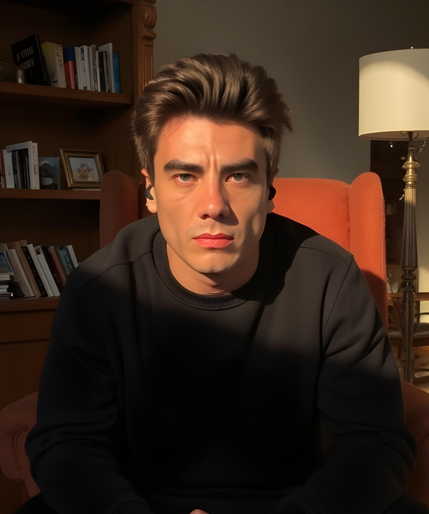

Sobre mim
Sou o José Gabriel. Há anos estudo e aplico a Constelação Familiar e desenvolvi um jeito próprio de facilitar reconciliações e decisões com os pés no chão.
Na Constelação na Água, uno conversa sistêmica com recursos simbólicos e musicais, para tornar a sessão mais fácil, verdadeira e transformadora.
Meu compromisso é oferecer um espaço de confiança, clareza e motivação para quem busca resolução de conflitos e novos caminhos.
Falar no WhatsApp